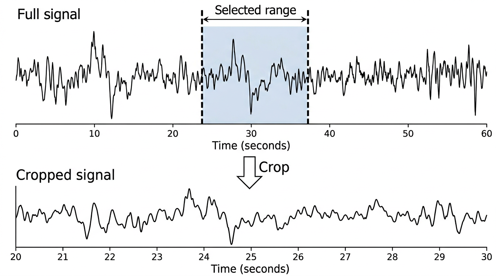
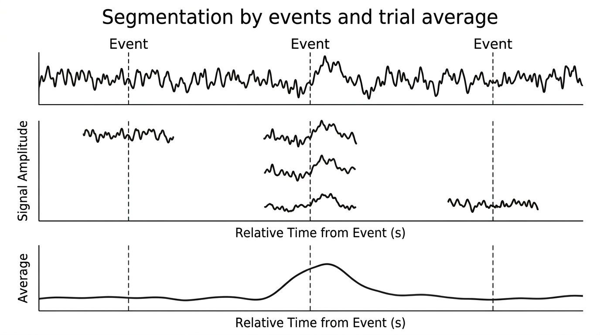
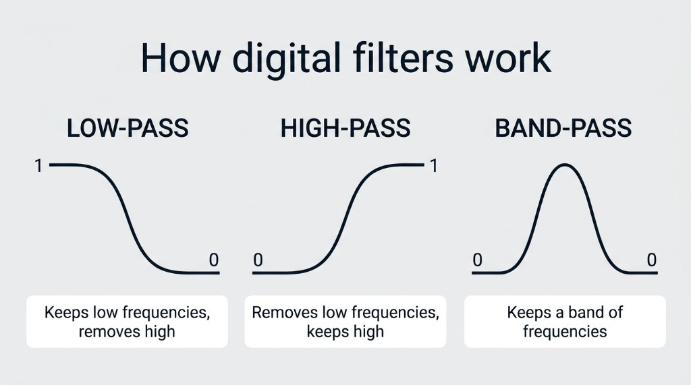
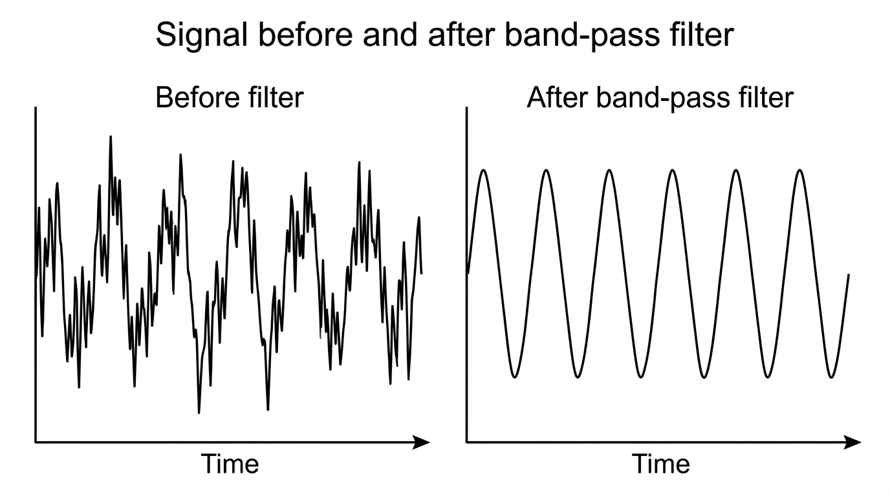

Pipeline
Laser Doppler flowmetry (LDF)
Three windows turn a LabChart recording of blood flow into stimulus-locked trials and a grand average. Signal Characterization then measures each response.
What it does
Loads a LabChart .mat export (stimulus on channel 6, LDF on channel 8), shows both, and crops the experiment by typing a range or clicking twice on the plot.
Optional downsampling (1×, 2×, 5×, 10×, anti-aliased) and filtering (low-, high-, band-pass or notch; Butterworth, Chebyshev I or FIR), then trials cut around each stimulus onset. Trials can be appended to an existing trials file.
Pools the trials of one or more trial files with the same time axis and plots all trials and the grand average (mean ± SD), optionally relative to each trial's pre-stimulus mean.
The LDF channel is used as exported (for example in perfusion units, PU). Laser Doppler flowmetry measures the Doppler shift of light scattered by moving red blood cells[11]; the toolbox does not convert it to absolute flow.
Walkthrough on the demo recording
Inputs and outputs
Extract LDF
In
- LabChart export
.matwithdata(all channels, concatenated),datastartanddataend(start / end index of each channel) - Optional:
samplerate(Hz; 1000 Hz is assumed when missing),titles,unittext, comments - Stimulus = channel 6, LDF = channel 8
Out
- Cropped
.matwithstim(stimulus),LDF(flow),t(time in s, 0 at the crop start) andFs(Hz)
LDF Processing
In
.matfrom LDF Extract withstim,LDF,t,Fs(all four are required)
Out
.matwithsegmentedLDF(trials × samples),segmentedTime(s, 0 = stimulus onset, negative = before) andFs
Average LDF Viewer
In
- One or more
.matfiles withsegmentedLDFandsegmentedTime(from LDF Process)
Out
- Plots of all trials and of the grand average (mean ± SD); the file list shows how many trials came from each file
Variable-level details are on the file formats page.
Methods
Cropping
Sample k is at time (k − 1) / Fs. Cropping keeps samples round(Start·Fs)+1 to round(End·Fs)+1, with 0 ≤ Start < End ≤ duration. Loading a new file discards the previous crop.
Filtering and downsampling
Downsampling decimates the LDF with an anti-aliasing filter and subsamples the stimulus. Filters are applied forwards and backwards (zero-phase), so responses are not shifted in time. Butterworth filters have a maximally flat pass-band[19]; Chebyshev I filters are steeper with pass-band ripple; FIR filters are always stable but need a high order for a sharp cutoff. Cutoffs must lie below half the sampling rate after downsampling (1000 Hz / 10 → cutoffs below 50 Hz). Processing always starts from the loaded data, so new settings never filter an already filtered signal.
Trials
Onsets are the samples where the stimulus rises above the threshold; an onset closer than the minimum interval to the previous one is ignored. Each trial runs from onset − pre to onset + post; trials that would run past the start or end of the recording are skipped. Files are pooled in the Average LDF Viewer only when their time axes are identical. Relative to baseline subtracts the mean of each trial's samples before t = 0.

Illustration
Illustration
Illustration
IllustrationDemo expectations
These are the results the demo recording should give (from the in-app Help). The recording itself is described on the demo data page.
Extract LDF
- Data: LabChart-style export, 8 channels, 300 s at 1000 Hz. Channel 6 = stimulus: 9 pulses of 5 s every 30 s from t = 30 s. Channel 8 = LDF: ~120 PU baseline with slow drift, vasomotion (0.13 Hz), a cardiac ripple (6 Hz) and noise.
- What you should see: after each stimulus pulse the LDF rises by about +30 PU, peaking about 4 s after the onset, and returns to baseline within ~12 s.
- Try: crop 20 to 280 s (this is exactly what the LDF Process demo file contains) and save; the cropped plots start at t = 0 with the first pulse at 10 s.
LDF Processing and filtering
- Data: the cropped demo recording (20–280 s of the LDF export, 1000 Hz): 9 stimulus pulses of 5 s, the first at 10 s, then every 30 s.
- Try: downsample 10x, low-pass ~1 Hz (removes the 6 Hz cardiac ripple), then segment with pre = 5 s and post = 20 s.
- What you should get: 8 complete trials (the last pulse is too close to the end for a 20 s window). The mean response rises after 0 s and peaks ~4 s after onset at ~+30 PU above a ~120 PU baseline.
- Data: the cropped demo LDF (1000 Hz). Besides the ~+30 PU responses it contains a slow drift (period 400 s), vasomotion at 0.13 Hz (±3 PU), a cardiac ripple at 6 Hz (±1.5 PU) and white noise.
- Low-pass 1 Hz (after 10x downsampling): the 6 Hz ripple and most noise disappear, the responses keep their shape and timing (zero-phase filtering: the peak stays ~4 s after onset).
- High-pass 0.2 Hz: removes drift and vasomotion but also shrinks and distorts the slow (~5 s wide) responses, a good example of a cutoff that is too high for LDF.
Average LDF Viewer
- Data:
demo_ldf_trials.mat, 8 trials from −5 to 20 s at 10 Hz (0 = stimulus onset). - What you should get: the grand average is flat before 0 s (~120 PU), rises after onset and peaks ~4 s after onset at ~+30 PU, then returns to baseline by ~12–15 s. The SD band shows the trial-to-trial vasomotion (a few PU).
- With Relative to baseline the curve starts at ~0 PU and peaks at ~+30 PU.
Step-by-step instructions and troubleshooting: Extract LDF, LDF Processing, Filtering, Average LDF Viewer.